说明：创建/修改规则
🌟上线记录
|
时间 |
上线内容 |
|---|---|
|
20240307 |
更新点一：支持条件间逻辑书写 [非] 逻辑 更新点二：支持规则查看表达式规则交互式展示方式 更新点三：支持表达式切换交互式时一键解析填充交互式逻辑 更新点四：支持加减乘除函数配置常量 还有部分交互细节更新~ 支持交互式多条条件书写时，光标在条件间逻辑表达式某条件后，条件表格中该条件高亮；字符串模糊匹配无需选择下拉框内容输入完成即可继续下一步；只有一个条件忘了写条件间逻辑？平台自动补全；等等还有更多体验优化欢迎反馈至liusimiao |
一、什么是规则
规则即构成一条策略的基础元素之一，用于策略部署。规则的表达式由规则因子和参数构成，作为逻辑封装的顶层仅存在True/False两种执行结果。例如：是不是模拟器的请求。
当前规则配置可支持表达式和交互式两类配置方式。
名词解释
属性信息：标签、共享业务方
逻辑信息：配置方式、状态、英文名称
二、如何新增/修改规则
step1：入口
规则—>规则—>添加规则
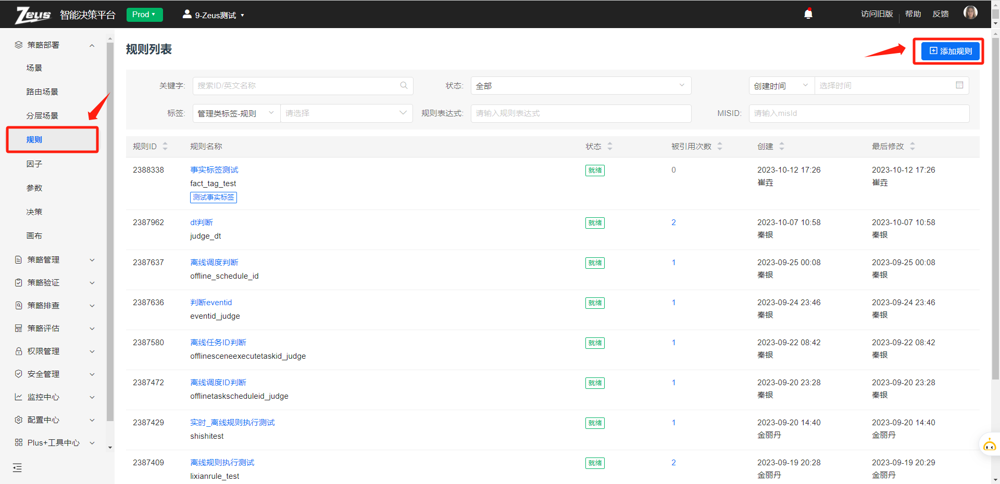
step2：添加规则
2.1 表达式配置规则
|
说明 |
示意图 |
||||||||||||
|---|---|---|---|---|---|---|---|---|---|---|---|---|---|
|
1、首先填写规则逻辑信息，填写中文名称、英文名称、规则内容 2、可在输入框中书写aviator表达式 填写说明：
|
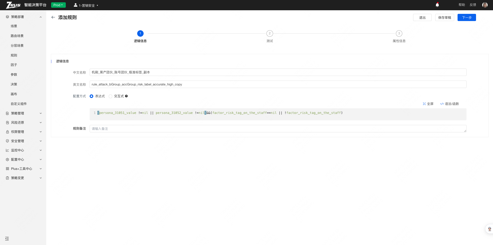 |
||||||||||||
|
3、表达式书写完成，对于平台校验出的复杂逻辑（使用复杂函数/操作符/aviator5等逻辑）进行特征沉淀。
|
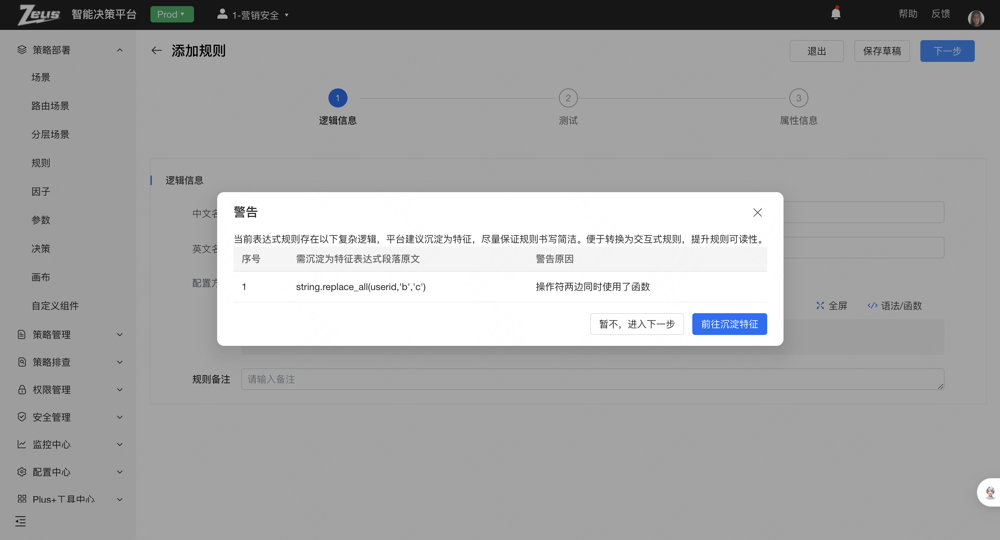 |
||||||||||||
|
4、逻辑信息填写完成，点击下一步进入测试阶段 填写说明：
如果有线上请求，可以直接输入requestid进行测试噢 |
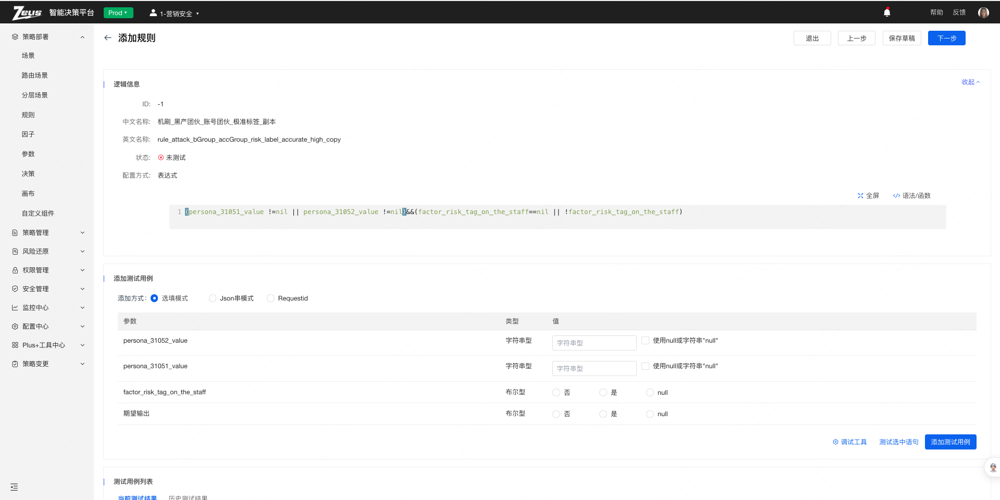 |
||||||||||||
|
5、添加规则属性信息，单击完成 |
|
||||||||||||
|
6、规则列表中出现添加的规则 |

2.2 交互式配置规则
|
说明 |
示意图 |
|---|---|
|
1、首先填写规则逻辑信息，填写中文名称、英文名称、规则内容，此处通过设定左变量、右变量、操作符设置规则条件，并通过在下方条件间逻辑处书写与或表达式设定规则逻辑。 填写说明：
|
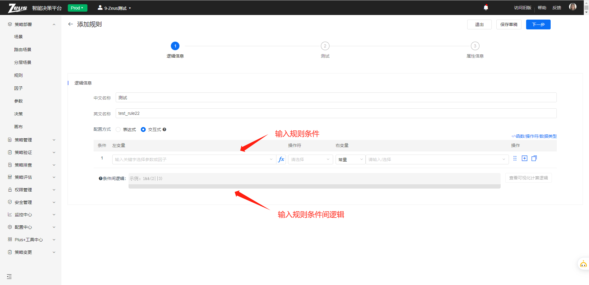 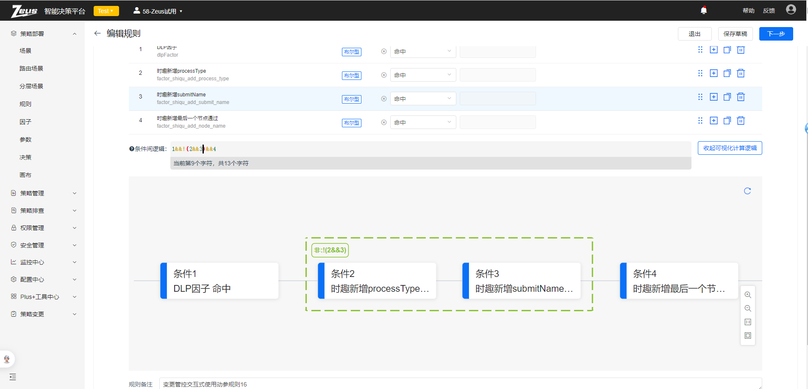 |
|
2、逻辑信息填写完成，点击下一步进入测试阶段 填写说明：
|
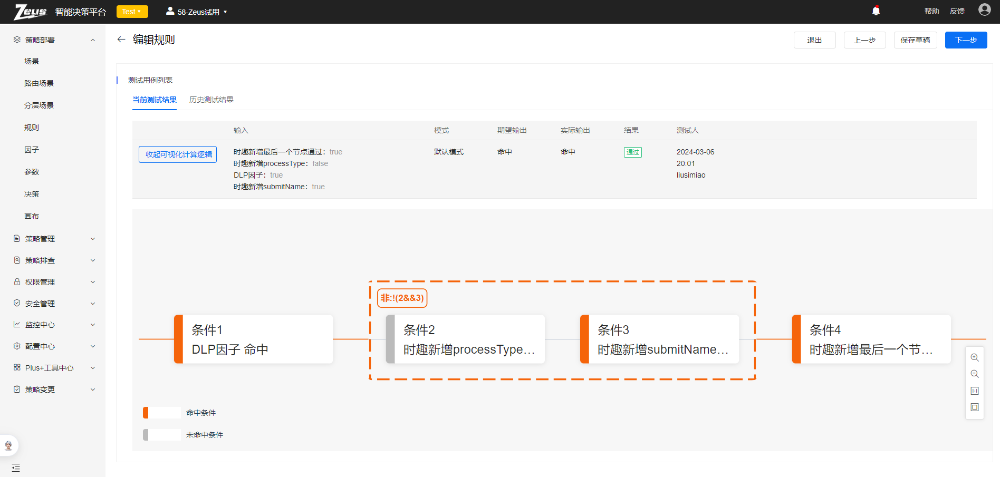 |
|
3、添加规则属性信息，单击完成 |
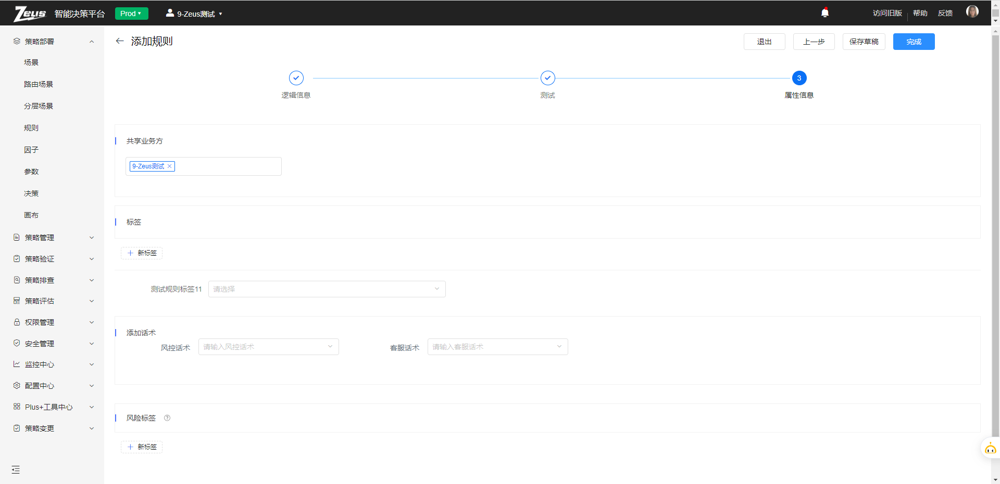 |
|
4、规则列表中出现添加的规则 |
step3：规则修改
3.1 修改逻辑信息
注意：
此时若有其他人正在编辑该规则，您将收到提示xxmis号正在修改，需xx修改完成/退出编辑状态后，您方可修改。若您着急修改请大象联系该用户退出编辑状态。

|
说明 |
示意图 |
|---|---|
|
对于未生效规则，点击右上角【编辑】按钮，后续即可按照添加规则流程对规则进行修改，修改后的规则仍要经过测试，并且至少有一条新增的成功测试用例后才可提交。 |
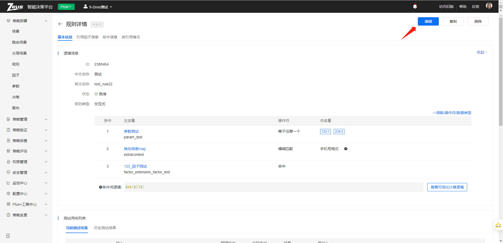 |
|
对于线上生效规则，点击右上角【编辑逻辑信息】按钮，弹出弹窗确认创建实验任务，实验相关可参考文档：策略实验用户指南 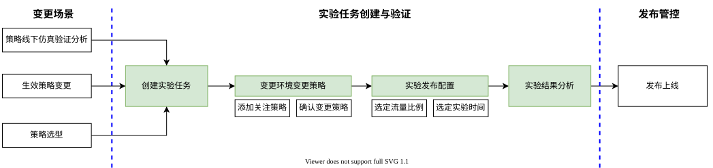 |
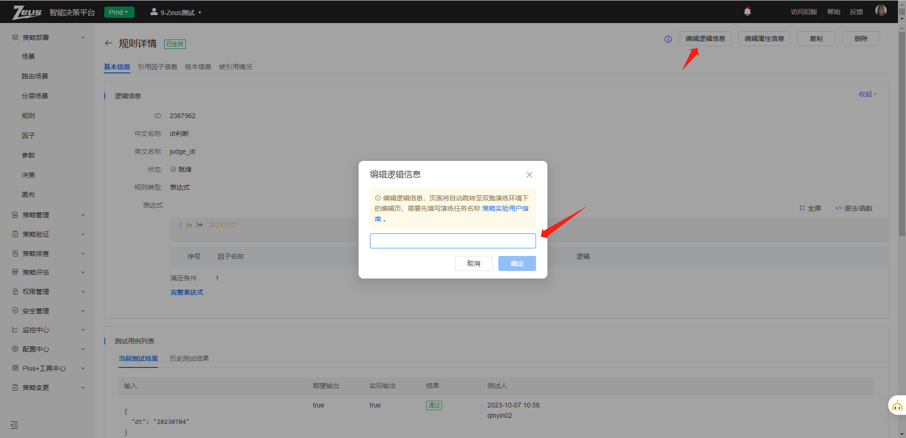 |
3.2 修改属性信息
在规则列表中找到需要修改的规则，并点击规则进入编辑页面。进入编辑页面后，在引导页第三部分“属性信息”中，修改共享信息、标签信息等，修改后点击“提交”，完成修改；
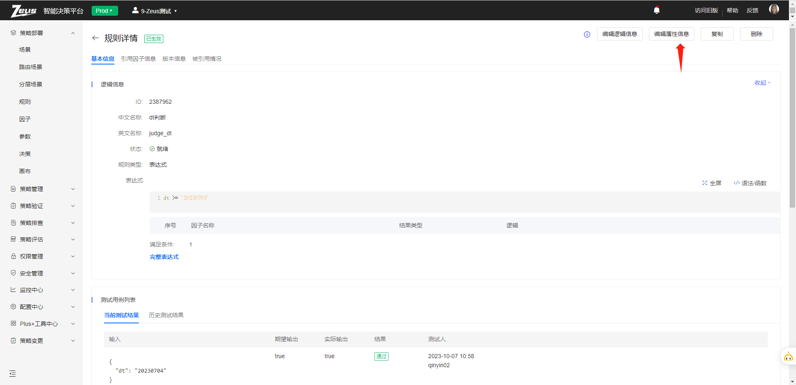
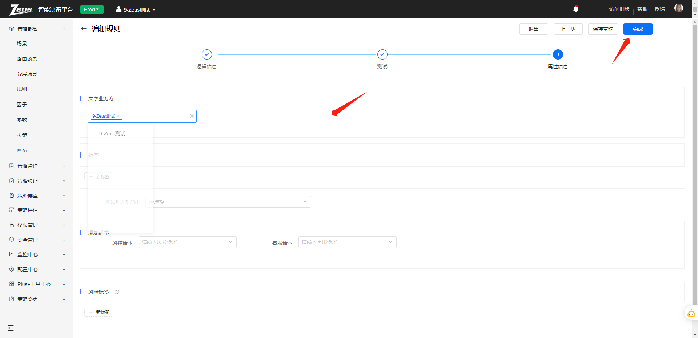
三、宣讲记录
20231030-规则交互式部署宣讲
交互式：交互式有什么好处？
1. 支持规则内短路执行，计算成本低
2. 左右变量操作符表征规则逻辑，可读性高
3. 对于简单逻辑类规则，用户上手学习成本低